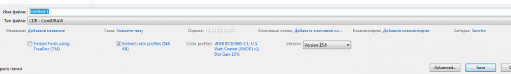

Свойства документа
vovan1953 / 17.11.2011, 20:15/00:41
Форум:
Версия программы:
15.2.0.686 (sp3)
Перед сохранением и закрытием файла можно добавить данные на панель Свойства документа
Вопрос: как и где можно увидеть эти данные ПЕРЕД открытием этого файла впоследствии ?
Корел Х5 под ХР эти данные показывает, а под W7 - нет.
Вот скрин окна сохранения из Win7, как видно все доп. поля присутствуют, главное окно пошире растянуть.

Sancho, Пробовал. Все кнопки, изначально туда заложенные,просторно
распределяются по всему полю. Сожмите экран, и кнопочки соберутся в кучку. Но ни одна
при этом не исчезнет за бортом! Прилагаю маленький скриншот: Х5 под W7, Сохранить как,
растянутый на всю ширину.
Вопрос: как эти кнопки вывести на экран ИЗНАЧАЛЬНО ?
vovan1953, ну они там изначально и есть. Я лично ничего дополнительно для их появления не делал.
Sancho, Спасибо.Наверное, нужно сначала перезагрузить Х5 поверх установленного, как советовал Афи по теме Preview, чтобы заработал Shell, а потом
остальное подтягивать. Утомил я всех...
примерно такая же проблема с 7-кой--- когда в ХР открывал файл --там в пенельке была написана версия открываемого фаыла-- Версия 14 или 12 --очень удбно при отдаче на сторону ---- записал в 13-м --проверил открытием -действительно 13-й! А теверь при открытии навидать в кокой версии файло... и что теперь делать?
Кстати у меня окно сохранения такое же, как и у vovan1953. Правда не заморачивался этой темой. Но все же факт интересный. И согласен с chally, было удобно, когда отображалась версия сохраненного файла.
Страницы